Knowledge of shear failure is important while designing any structures or components. Whenever forces act upon a body in such a way
that one portion tends to slide upon another adjacent to it the action is called a shear. In wood this shearing action may be along
the grain, or across the grain. A tenon breaking out its mortise is a familiar example of shear along the grain, while the shoving off
of the tenon itself would be shear across the grain.
 Knowledge of shear parallel to the grain is important, since wood frequently fails in that way. The value of shearing stress parallel
to the grain is found by dividing the maximum load by the area of the cross section.
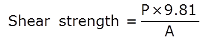
The shear test shall be carried out on a suitable testing machine with the help of a shearing tool in a rig. The specimen shall be
supported in the rig by means of a cross bar such that the edges of the specimen are vertical and part of end surface not to be
shared off rests on the support throughout the test. The shearing tool shall rest on the notch. The direction of shearing shall be
parallel to the longitudinal direction.
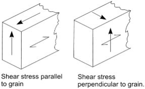
The ratio of stress to strain in shear is known as the modulus of rigidity, or shear modulus. Shear failure may coincide with one
of these planes; hence, six distinct modes of shear failure are possible: LR, RL TL, LT, RT, and TR.M
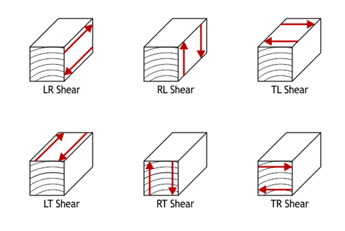
Collectively, RT and TR shear are sometimes called rolling shear; Rolling shear is defined as shear stress leading to shear strains
in a plane perpendicular to the grain direction. Due to the very low rolling shear stiffness of timber significant shear deformations may occur.
LR and LT shear are the two kinds of longitudinal shear. Wood is generally more resistant to longitudinal shear than rolling shear;
however, longitudinal shear is a common failure mode in an overloaded beam. This longitudinal shear is maximum at the neutral plane
and decreases toward the upper and lower surfaces.
Finally, RL and TL shear are the two kinds of transverse shear. Except for certain brittle softwoods, like western red cedar, wood
very rarely fails in transverse shear: it will undergo tensile failure first.
TEST SPECIMEN:
The specimens are usually in the form of small, clear, straight-grained blocks with a projecting tenon or lip to be sheared off.
Two common forms and sizes are shown in figure. Part of the blocks is cut so that the shearing surface is parallel to the growth rings,
or tangential; others at right angles to the growth rings, or radial. It is important that the upper surface of the tenon or lip be sawed
exactly parallel to the base of the block. When the form with a tenon is used the undercut is extended a short distance horizontally into
the block to prevent any compression from below. The standard test specimen shall be 5 X 5 cm in cross-section and 6 cm in length
or 2 X 2 cm in cross-section and 3 cm in length. The specimens shall be notched on one end to produce shear failure on 5 X 5 cm or 2 X 2 cm surface
in the radial or tangential plane.
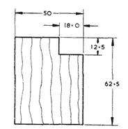
RELEVANT INDIAN STANDARD FOR DIRECT SHEAR TEST:
Knowledge of shear parallel to the grain is important, since wood frequently fails in that way. The value of shearing stress parallel
to the grain is found by dividing the maximum load by the area of the cross section.
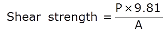
The shear test shall be carried out on a suitable testing machine with the help of a shearing tool in a rig. The specimen shall be
supported in the rig by means of a cross bar such that the edges of the specimen are vertical and part of end surface not to be
shared off rests on the support throughout the test. The shearing tool shall rest on the notch. The direction of shearing shall be
parallel to the longitudinal direction.
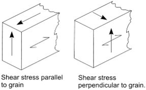
The ratio of stress to strain in shear is known as the modulus of rigidity, or shear modulus. Shear failure may coincide with one
of these planes; hence, six distinct modes of shear failure are possible: LR, RL TL, LT, RT, and TR.M
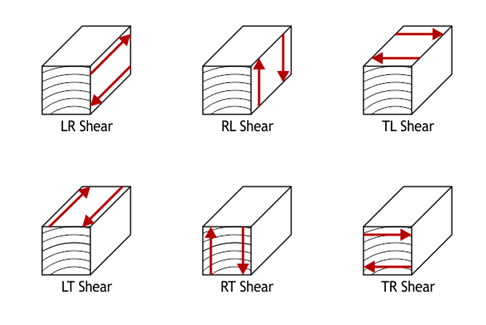
Collectively, RT and TR shear are sometimes called rolling shear; Rolling shear is defined as shear stress leading to shear strains
in a plane perpendicular to the grain direction. Due to the very low rolling shear stiffness of timber significant shear deformations may occur.
LR and LT shear are the two kinds of longitudinal shear. Wood is generally more resistant to longitudinal shear than rolling shear;
however, longitudinal shear is a common failure mode in an overloaded beam. This longitudinal shear is maximum at the neutral plane
and decreases toward the upper and lower surfaces.
Finally, RL and TL shear are the two kinds of transverse shear. Except for certain brittle softwoods, like western red cedar, wood
very rarely fails in transverse shear: it will undergo tensile failure first.
TEST SPECIMEN:
The specimens are usually in the form of small, clear, straight-grained blocks with a projecting tenon or lip to be sheared off.
Two common forms and sizes are shown in figure. Part of the blocks is cut so that the shearing surface is parallel to the growth rings,
or tangential; others at right angles to the growth rings, or radial. It is important that the upper surface of the tenon or lip be sawed
exactly parallel to the base of the block. When the form with a tenon is used the undercut is extended a short distance horizontally into
the block to prevent any compression from below. The standard test specimen shall be 5 X 5 cm in cross-section and 6 cm in length
or 2 X 2 cm in cross-section and 3 cm in length. The specimens shall be notched on one end to produce shear failure on 5 X 5 cm or 2 X 2 cm surface
in the radial or tangential plane.
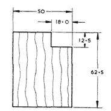
RELEVANT INDIAN STANDARD FOR DIRECT SHEAR TEST:
- S 1708-(part 11)- Methods of testing of small clear specimens of timber.
- Click on the direct shear test on timber file, a window will open as shown below. 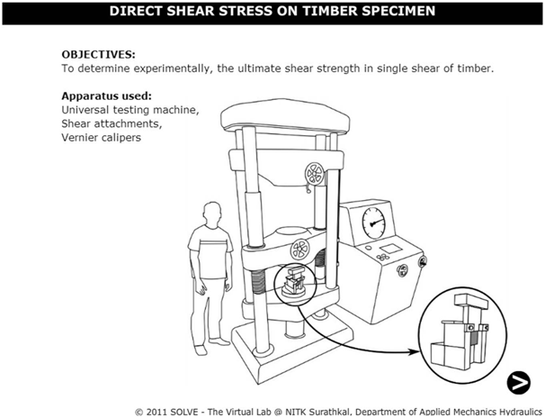
- Click on the NEXT button to move to the next step. 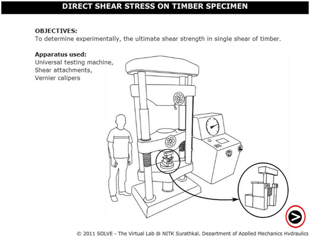
- Width and depth of the timber specimen is determined, after that click on NEXT button.

- Now the shear attachment is placed in UTM, after placing of the specimen then move to the next step. 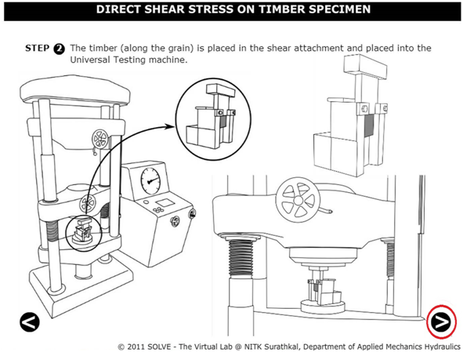
- Switch on the machine and apply load gradually. 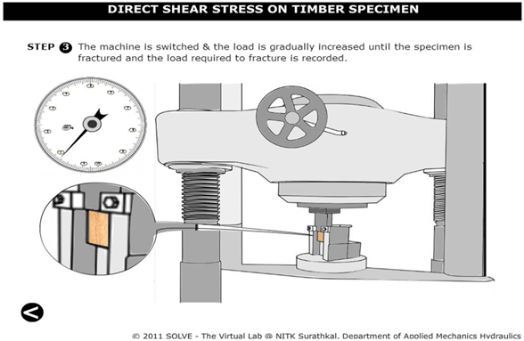
- Load is applied till the fracture of the specimen and after that click on the NEXT button to view the results. 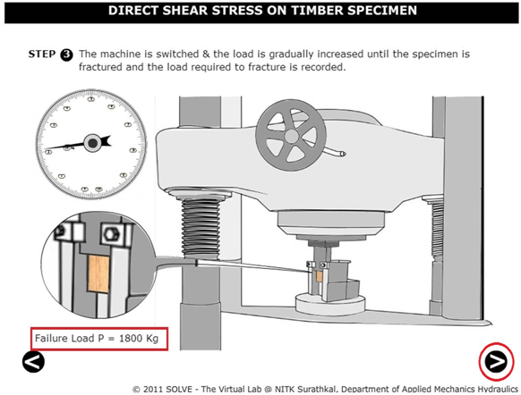
- The results are obtained as follows. 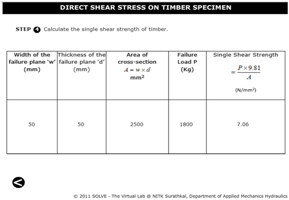
- Give example for shear along the grain and across the grain?
- Overloaded wooden beam usually fails under which type of shear?
- Explain three types of shear failure in wooden specimen?
- What is the standard size of wooden specimen?
- Which IS code is used for direct shear test on wood?

OBJECTIVE : To determine ultimate shear strength of timber in single shear. STEPS:


IS 1708 (part 11)-1986 : Method of Testing Small Specimens of Timber, Second Revision, 2005
YEN C.S., Stress distribution in a single shear sheet specimen, ASTM International, September 3rd, 2015.
Hearn E,J., Mechanics of Material, Pergaman Press, England, 1972.
Beer and Johnston E.R., Mechanics of Material, 3rd Edition, Tata McGraw Hill,New-Delhi, 2007.
F.L. Singer. Engineering Mechanics – Statics and Dynamics, Harper and Row Publishers.
J.L. Marium and L.G. Kraige, Engineering Mechanics – Vol I & II, John Wiley & Sons.